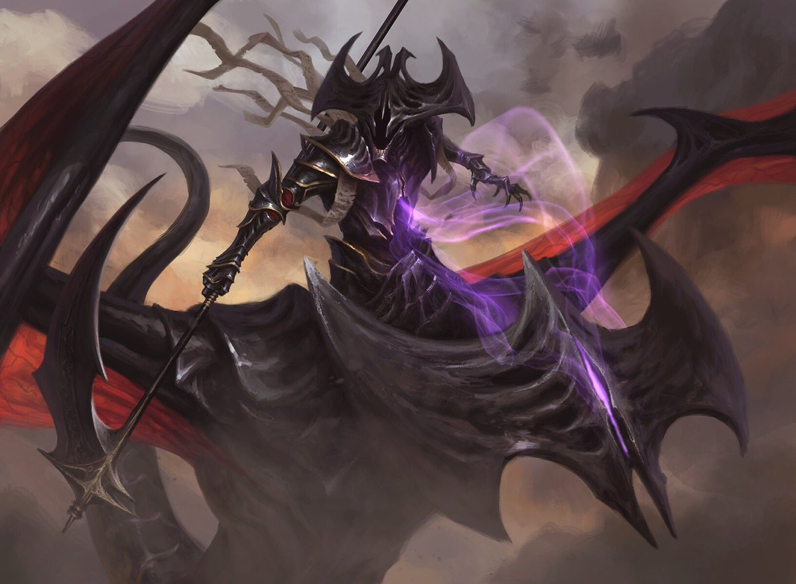
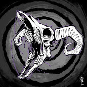

You Aren't Special
Learn about the dissemination of the alternative into the mainstream, and what you can do to make a difference in alternative communities.

How Twitter Rotted The Internet's Brain
Twitter allows everyone the ability to put their thoughts out into the world for free within just a few seconds; It was seen as a social pillar of community and communication. Nowadays, however it has become a the center of Brainrot.

A look at the importance of Specters in Magic: The Gathering
Specters are a distinct tribe in Magic and deserve much more representation.
